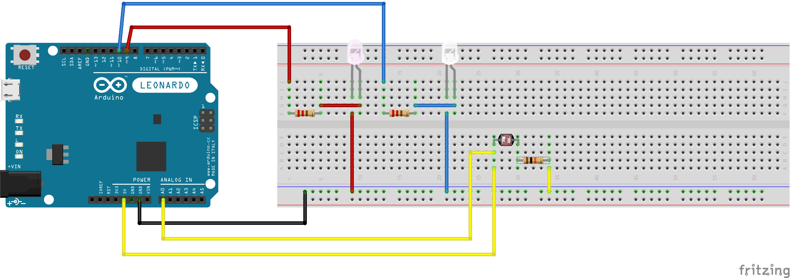
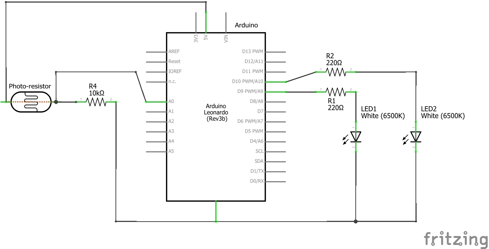

Zach Thomas Assignment 3: Input/Output!

Here is a short gif of the functionality of my circuit. When uncovered LED 1 is at full brightness and LED 2 is barely lit. As the sensor is more and more covered the functionality of the two LED's switches.  Here is the breadboard diagram for my circuit.  Here is the technical schematic of the circuit. To decide on the appropriate ressistors I used Ohm's law. The Arduino pins provide a maximum of 5 Volts. Each white LED has a voltage drop of 3.3 Volts. 5V - 3.3V = 1.7V for each individual LED circuit. LED max current is 20mA = 0.02A. R = 1.7V / 0.02A = 85Ω. I used a 220Ω ressistor for each LED. The photo resistor has a measured minimum of 15,000Ω. This is plenty with a 5V supply to make sure not to break the Arduino 5V/15,000Ω = 0.333 mA but just to make sure I used a 10,000Ω ressistor making the minimum 15,000Ω 5V/25,000Ω = 0.2 mA.
/*
Zach Thomas
HCDE 439: Physical Computing
Assignment 3: Input/Output
*/
// These constants won't change. They're used to give names to the pins used:
const int analogInPin = A0; // Analog input pin that the potentiometer is attached to
const int analogOutPin = 9; // Analog output pin that the LED is attached to
int sensorValue = 0; // value read from the pot
int outputValue9 = 0; // value output to the PWM (analog out)
int outputValue10 = 0;
void setup() {
// initialize serial communications at 9600 bps:
Serial.begin(9600);
}
void loop() {
// read the analog in value:
sensorValue = analogRead(analogInPin);
// map analog in value to the range of the analog out for light 1:
outputValue9 = map(sensorValue, 115, 365, 5, 250);
// map analog in value to the range of the analog out for light 2:
outputValue10 = map(sensorValue, 365, 115, 5, 250);
// Check if the analog in is within the normal parameters:
if(sensorValue > 115 && sensorValue < 365) {
// Set analog out 1:
analogWrite(9, outputValue9);
// Set analog out 2:
analogWrite(10, outputValue10);
// Check if the sensor value is too high:
} else if(sensorValue > 365) {
// Set analog 1:
analogWrite(9, 250);
// Set analog 2:
analogWrite(10, 5);
// If analog in is too low:
} else {
// Set analog 1:
analogWrite(9, 5);
// Set analog 2:
analogWrite(10, 250);
}
// print the results to the Serial Monitor:
Serial.print("sensor = ");
Serial.print(sensorValue);
Serial.print("\t Light One = ");
Serial.print(outputValue9);
Serial.print("\t Light Two = ");
Serial.println(outputValue10);
// wait 2 milliseconds before the next loop for the analog-to-digital
// converter to settle after the last reading:
delay(2);
}